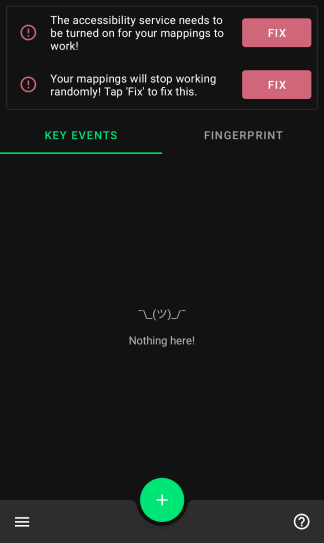
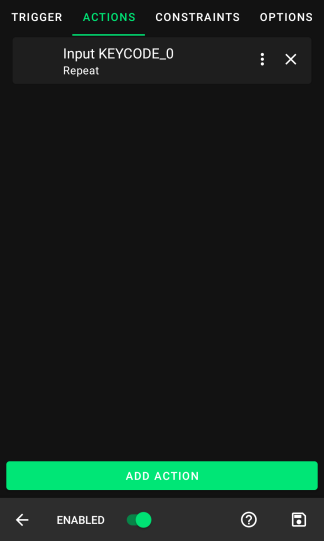
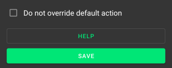

不想再在手机上划来划去？Key Mapper 让你的音量键变成万能快捷键
第一次接触键重映射也不怕——跟着这篇从下载安装到锁屏手电筒，五分钟上手三个最实用的玩法，避开新手最容易踩的四个坑。
这篇能带你从完全不懂到用起来——不需要任何 Android 搞机经验，不需要 root，跟着做就行。
你有没有过这种时刻：半夜翻身想摸手机开手电筒，屏幕还没按亮就要划半天下拉栏？或者玩游戏时想截图，手指要同时按电源和音量键，姿势别扭得像在练瑜伽？Key Mapper 就是来解决这些的，它的官网上有完整的入门教程——它让你把手机上几乎任何一个实体键（音量键、电源键、耳机线控、甚至蓝牙手柄的按键）重新定义成你想要的功能。
它到底是干嘛的——一个生活化类比
想象你手机的实体键是你家的电灯开关。默认情况下，音量减就是调小音量，电源键就是熄屏。但 Key Mapper 就像一个聪明的电工，让你可以在开关背后接上不同的电路：音量减长按变成开手电筒，双击音量加变成秒开相机，耳机键连按两下切歌曲。而且这些"电路"还可以加条件——比如只在锁屏时生效，只在某个游戏里生效，甚至只在蓝牙耳机电量低于 20% 时才触发。
这个"触发器 + 动作 + 约束"的三段式结构就是 Key Mapper 的核心，所有功能都围绕这三个零件转。听起来像编程？其实界面全是图形化的，点选就行。
五分钟上手——从下载到第一次跑通
先装上，再跟着做一遍锁屏手电筒——这是官方文档的招牌入门教程，十分钟内肯定跑通。
第一步：下载安装
应用商店搜不到也别慌，直接从下载拿就行。装好之后打开 App，它会引导你依次开启几项权限：无障碍服务、输入法、免打扰访问。这些权限看着吓人，其实都是 Key Mapper 能读到按键事件和执行动作的前提——不授权它就是个空壳。跟着引导一项项开，每开一项 App 会自动跳回主页，不用自己找回来。

第二步：建第一个键映射
主页点右下角的加号，进入键映射编辑界面。
- 录触发器：点 Record trigger，按下你想重映射的键——比如音量减。松开之后选 Long press（长按），这样平时按一下调音量不受影响，只有长按才触发我们要的动作。
- 配动作：切到 ACTIONS 标签，点 Add action，在长长的动作列表里搜"手电筒"，选 Toggle flashlight（切换手电筒）。默认参数不用改，完成就行。
- 加约束：切到 CONSTRAINTS 标签，点 Add constraint，选 Lockscreen is showing（锁屏显示）。这一步是灵魂——加了它之后，手电筒只在锁屏时长按音量减才响应，解锁状态下音量减老老实实调音量。

第三步：保存测试
点右下角的保存图标回到主页，新键映射出现在列表里。看主页顶部的状态条——必须是绿色 Running 才代表正在生效。现在锁屏、保持屏幕亮着、长按音量减——手电筒应声开关。成了。
上手后先玩这三个功能
锁屏手电筒跑通之后，别急着去碰熄屏触发和 Expert Mode（专家模式）——那是进阶内容。先把下面三个新手最值得碰的功能玩熟。
自动切换键盘——让 Key Mapper 不再抢你的输入法
你会发现一个尴尬的事：键映射执行完之后，当前输入法停在了 Key Mapper 自己的占位键盘上，打字发现九宫格变了、联想没了。别担心，进设置找到"开始打字时自动更换键盘"开关，打开之后你一打字就自动切回自己装的输入法。这个开关在 4.0 之后可靠性大幅提升，老版本用户先升级。
通知栏一键暂停——演示手机时的救命按钮
键映射多了之后难免误触——比如给朋友演示手机时，不小心按到音量减就开了手电筒。拉下通知栏，你会看到 Key Mapper 的常驻通知，点一下就能在 Running / Paused 之间切换，全停或全恢复，不用逐条改。还可以把磁贴加到快捷设置面板，下拉就能按。
触发器选项——长按、双击、并行、序列，一次录多个
Record trigger 之后别急着保存，你会看到触发器选项里有 Parallel（并行，同时按多个键触发）和 Sequence（序列，按顺序依次按下触发）。比如可以设成音量加 + 音量减同时按截图，或者先按音量加再按音量减打开某个 App——这两个模式把触发器的可能性翻了好几倍。

小白的三个常见疑问
这三个问题在keymapper文档的 FAQ 里出现频率最高的，提前知道能省你不少排查时间。
锁屏一灭屏，手电筒就失效了？
"锁屏显示"这个约束只在屏幕亮着时成立——安卓系统本身不允许任何应用在熄屏时检测按键事件。想熄屏也能开，得进 Expert Mode（专家模式），通过 ADB 给应用一个特殊权限。新手阶段先别急着碰，先把亮屏场景玩熟。
锁屏没键盘，手机解不开了？
这是 Key Mapper 最危险的一个坑——如果你把它自带的 Basic Input Method（没有屏幕键盘的占位键盘）设成了常用输入法，锁屏时就输不了密码。自救方法是长按电源键调出菜单，长按"关机/重启"选项进入安全模式——安全模式下第三方输入法全部停用，用系统自带键盘解锁。预防：不要把 Basic Input Method 设为常用输入法，要么用它的 GUI Keyboard，要么开自动切换。
蓝牙键盘一连上，布局就乱了？
Android 11 上有个系统 bug——开启无障碍服务后，系统把所有外接设备误认为同一个虚拟设备，拿不到真实键盘布局。Key Mapper 2.3 之后内置了 workaround：设置里找到"修复 Android 11 把输入设备 ID 设为 -1 的 bug"开关打开，再连接外设勾选要修的设备就行。Android 12 起官方修了这个 bug，能升级就升级。
下一步怎么走
锁屏手电筒只是一个最小骨架——把触发器换成耳机键长按、动作换成切换勿扰、约束设成"蓝牙已连接"，就得到了一个"耳机长按静音"的实用场景；把触发器换成手柄 SELECT 键、动作换成截图、约束设成"指定应用前台"，就是游戏内一键截图。这个三段式骨架通用得很。
如果你想继续深入——比如熄屏重映射、约束分组、变量系统写宏——完整资料也同步维护在开源仓库里：GitHub 上有完整提交历史，国内访问不方便的话可以用 Gitee 镜像，还有一份 GitCode 备份 以防万一。